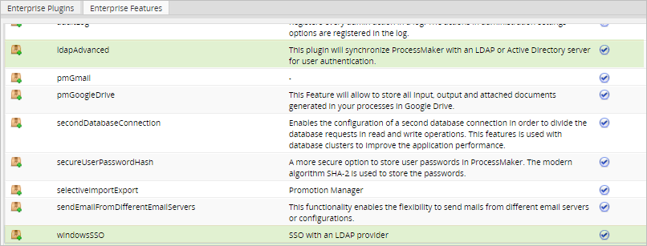

- Overview
- How the Feature Works
- Requirements
- Licensing
- Implementing Windows Single Sign-On with Apache in ProcessMaker
- Installing and Configuring mod_auth_sspi Module in Apache 2.2
- Installing and Configuring mod_auth_sspi Module in Apache 2.4
- Register the User's Computer to the Active Directory Domain
- Configuring Browsers to Use Windows Single Sign-On
- Access to ProcessMaker with Windows Single Sign-On
Overview
Windows Single Sign On is a feature in ProcessMaker Enterprise. This feature allows users to use Active Directory accounts like normal ProcessMaker accounts. This means that users will be able to automatically log in to ProcessMaker, skipping the login screen, using their Active Directory accounts.
For ProcessMaker installations in Linux environments, please go to the following guide: Windows Single Sign-on in Linux.
For ProcessMaker installations in Windows environments, please follow the instructions below:
How the Feature Works
The Windows Single Sign On feature uses Microsoft Active Directory user credentials to give users the ability to log directly in to ProcessMaker. Take into account that ProcessMaker does not save the user's password, it just verifies the credentials the user logged in to Windows with via a trusted connection with the Active Directory Server. In addition, the Active Directory account list will be synched automatically with the ProcessMaker account list. New accounts created in the Active Directory will be also created in ProcessMaker.
Move accounts of employees that no longer work at the company, but are still maintained in the Active Directory, to the Terminated OU so ProcessMaker will consider them to be disabled.
Requirements
To work with this feature, the following requirements are necessary:
- Access to ProcessMaker Enterprise Edition 3.0.1 or higher.
- ProcessMaker's Advanced LDAP feature.
The following Apache modules from the Advanced LDAP feature must be enabled for the Windows Single Sign On plugin to work properly. Please verify that the following modules are uncommented in the httpd.conf file of the Apache installation:
LoadModule authnz_ldap_module modules/mod_authnz_ldap.so
LoadModule ldap_module modules/mod_ldap.so- Access to the Active Directory Server.
- Credentials of a valid account in the Active Directory server, with administrator permissions.
- DNS Domain entries, if your network requires them.
- It is recommended that the user configuring the feature has access to the Active Directory server to verify the registry imported to ProcessMaker.
Licensing
Make sure that the license installed in ProcessMaker includes the windowsSSO and ldapAdvanced features by going to Admin > Plugins > Enterprise Manager and selecting the Enterprise Features tab.

Installation and Configuration
ProcessMaker uses the RBAC plugin for the authentication design. This design allows users to define their own ways to verify user authentication, including using Active Directory. However, to use the RBAC plugin with Active Directory, a connection called Authentication Source needs to be defined.
Active Directory Authentication
An authentication source is basically the server and the port of an Active Directory server. ProcessMaker creates a record for the user in the database with a flag that indicates that the user should be authenticated in Active Directory.
Choose one of the options below to read about the steps and considerations when importing Active Directory users, groups and departments using the Advanced LDAP feature.
Implementing Windows Single Sign-On with Apache in ProcessMaker
The following sections detail the configuration needed to work with Windows Single Sign On when ProcessMaker is installed in Apache.
- Installing and configuring the mod_auth_sspi module in Apache 2.2
- Installing and configuring the mod_auth_sspi module in Apache 2.4
Installing and Configuring mod_auth_sspi Module in Apache 2.2
Read the instructions below to configure the mod_auth_sspi module in Apache 2.2:
- Download the
mod_auth_sspimodule here based on your Apache version. If Apache is installed with the 32 bit system type, the module must also be 32-bit system type. - Once the module is downloaded, open the file and search for the mod_auth_sspi.so file inside mod_auth_sspi-x.x. > bin
- Extract the mod_auth_sspi.so file and copy it to Apache's modules folder.
Open and edit the Apache's httpd.conf file and enable the mod_auth_sspi.so module adding the line:
LoadModule sspi_auth_module modules/mod_auth_sspi.so-
Open the pmos.conf file copied to Apache when ProcessMaker was installed and add the following lines of code inside the <Directory>...</Directory> section:
AuthName "ProcessMaker SSO" AuthType SSPI SSPIAuth On SSPIOfferBasic Off SSPIAuthoritative On SSPIDomain "projects.processmaker.com" SSPIOmitDomain On require valid-user Where:
- AuthName: Name of the authentication.
- AuthType SSPI: Type of the authentication.
- SSPIAuth: Set this option to On to enable SSPI authentication.
- SSPIOfferBasic: Set this option to Off to disable SSPI.
- SSPIAuthoritative: Set this option to On.
- SSPIDomain: Enter the name of the domain where the authentication was implemented. In case you are configuring a Development server, remove this option.
- SSPIOmitDomain: Set this option to On to omit the domain. In case you are configuring a Development server, set this option to Off.
- Require: Set this option to valid_user so only valid users can access the resource.
- Restart the Apache server to apply the changes.
Installing and Configuring mod_auth_sspi Module in Apache 2.4
Read the instructions below to configure the mod_auth_sspi module in Apache 2.4:
- Download the module here. Download the x86 version for Apache 32 bit and the x64 version for Apache 64 bit.
- Open the zip file, extract the mod_authnz_sspi.so file located in the Apache24 > modules folder and place it in the Apache's modules folder on the server where ProcessMaker is installed.
- Enable the module inside the Apache's
httpd.conffile by adding the line:LoadModule authnz_sspi_module modules/mod_authnz_sspi.so - Make sure that the following modules are uncommented since both are required for the module to work correctly.
LoadModule authn_core_module modules/mod_authn_core.so
LoadModule authz_core_module modules/mod_authz_core.so Open the
pmos.conffile that was configured when ProcessMaker was installed and add the front-end lines in bold to your ProcessMaker configuration, plus the Single Sign-On virtual host configuration after the ProcessMaker configuration, as shown below:-------------------------------------------------- # ProcessMaker Configuration Listen portNumber <VirtualHost *:portNumber > ServerName "your_processmaker_domain:portNumber" DocumentRoot INSTALLATION-DIRECTORY/opt/processmaker/workflow/public_html DirectoryIndex index.html index.php <Directory INSTALLATION-DIRECTORY/opt/processmaker/workflow/public_html> Options Indexes FollowSymLinks MultiViews AllowOverride All Order allow,deny Allow from all Require all granted <IfModule mod_headers.c> Header set Access-Control-Allow-Origin "*" Header set Access-Control-Allow-Headers "Content-Type,Depth,User-Agent,X-File-Size,X-Requested-With,If-Modified-Since,X-File-Name,Cache-Control,Authorization" Header set Access-Control-Allow-Methods "OPTIONS,GET,POST,PUT,DELETE" </IfModule> ExpiresActive On ExpiresDefault "access plus 1 day" ExpiresByType image/gif "access plus 1 day" ExpiresByType image/png "access plus 1 day" ExpiresByType image/jpg "access plus 1 day" ExpiresByType text/css "access plus 1 day" ExpiresByType text/javascript "access plus 1 day" <IfModule mod_rewrite.c> RewriteEngine On RewriteCond %{REQUEST_FILENAME} !-f RewriteRule ^.*/(.*)$ app.php [QSA,L,NC] </IfModule> </Directory> </VirtualHost> -------------------------------------------------- # Single Sign-On Configuration Listen portNumber <VirtualHost *:portNumber> ServerName "your_processmaker_domain:portNumber" DocumentRoot INSTALLATION-DIRECTORY/opt/processmaker/workflow/public_html DirectoryIndex index.html index.php <Directory INSTALLATION-DIRECTORY/opt/processmaker/workflow/public_html> Options Indexes FollowSymLinks MultiViews AllowOverride All Order allow,deny Allow from all AuthName "ProcessMaker SSO" AuthType SSPI SSPIAuth On SSPIAuthoritative On SSPIOfferBasic Off SSPIOmitDomain On Require valid-user ExpiresActive On ExpiresDefault "access plus 1 day" ExpiresByType image/gif "access plus 1 day" ExpiresByType image/png "access plus 1 day" ExpiresByType image/jpg "access plus 1 day" ExpiresByType text/css "access plus 1 day" ExpiresByType text/javascript "access plus 1 day" <IfModule mod_rewrite.c> RewriteEngine On RewriteCond %{REQUEST_FILENAME} !-f RewriteRule ^.*/(.*)$ app.php [QSA,L,NC] </IfModule> </Directory> </VirtualHost> Note: In case you are configuring a Development server, set
SSPIOmitDomainoption to Off.For example:
# ProcessMaker Configuration <VirtualHost *:80> ServerName 127.0.0.1:80 DocumentRoot c:/opt/processmaker/workflow/public_html DirectoryIndex index.html index.php <Directory c:/opt/processmaker/workflow/public_html> Options Indexes FollowSymLinks MultiViews AllowOverride All Order allow,deny Allow from all Require all granted <IfModule mod_headers.c> Header set Access-Control-Allow-Origin "*" Header set Access-Control-Allow-Headers "Content-Type,Depth,User-Agent,X-File-Size,X-Requested-With,If-Modified-Since,X-File-Name,Cache-Control,Authorization" Header set Access-Control-Allow-Methods "OPTIONS,GET,POST,PUT,DELETE" </IfModule> ExpiresActive On ExpiresDefault "access plus 1 day" ExpiresByType image/gif "access plus 1 day" ExpiresByType image/png "access plus 1 day" ExpiresByType image/jpg "access plus 1 day" ExpiresByType text/css "access plus 1 day" ExpiresByType text/javascript "access plus 1 day" <IfModule mod_rewrite.c> RewriteEngine On RewriteCond %{REQUEST_FILENAME} !-f RewriteRule ^.*/(.*)$ app.php [QSA,L,NC] </IfModule> </Directory> </VirtualHost> # Single Sign-On Configuration Listen 8080 <VirtualHost *:8080> ServerName 127.0.0.1:8080 DocumentRoot c:/opt/processmaker/workflow/public_html DirectoryIndex index.html index.php <Directory c:/opt/processmaker/workflow/public_html> Options Indexes FollowSymLinks MultiViews AllowOverride All Order allow,deny Allow from all AuthName "ProcessMaker SSO" AuthType SSPI SSPIAuth On SSPIAuthoritative On SSPIOfferBasic Off SSPIOmitDomain Off Require valid-user ExpiresActive On ExpiresDefault "access plus 1 day" ExpiresByType image/gif "access plus 1 day" ExpiresByType image/png "access plus 1 day" ExpiresByType image/jpg "access plus 1 day" ExpiresByType text/css "access plus 1 day" ExpiresByType text/javascript "access plus 1 day" <IfModule mod_rewrite.c> RewriteEngine On RewriteCond %{REQUEST_FILENAME} !-f RewriteRule ^.*/(.*)$ app.php [QSA,L,NC] </IfModule> </Directory> </VirtualHost> Save the pmos.conf file changes.
Edit the env.ini configuration file located at <INSTALLATION-DIRECTORY>/processmaker/shared/sites/<workspace>/env.ini and add the following lines:
server_protocol = https
server_hostname_requests_frontend = server_hostnameWhere server_hostname is the name of the server where the front-end lines were added to the configuration. In the example above, the server_hostname is "127.0.0.1:80".
To affect all the workspaces in ProcessMaker, set this configuration in the env.ini file located at:
<INSTALLATION-DIRECTORY>/processmaker/workflow/engine/config/env.ini- Restart the Apache server to apply all the changes made. Remember that users have to access the Single Sign-On virtual host to use their active directory account. In this example, access 127.0.0.1:8080.
Register the User's Computer to the Active Directory Domain
For this feature to work correctly, configure the Internet Protocol (version 4) of the user's computers to log in to Windows (and ProcessMaker) using their Active Directory credentials. To this, set the preferred DNS address to the same DNS address as the Active Directory server.

Then, make sure that the domain of the computer is the same domain as the Active Directory.

After setting the domain, the login credentials of the Active Directory server must be entered in the window that is shown. After setting the credentials, the computer must be restarted.
Note:
In the case the server domain and DNS are not registered on the Windows client machine that will be connected to the Windows Single Sign-On, add a new entry to the Hosts file which is located at: C:/Windows/System32/drivers/etc.
Configuring Browsers to Use Windows Single Sign-On
To enable the Windows Single Sign-On functionalities in ProcessMaker, it is necessary to configure the browsers where ProcessMaker will be used. The configurations for each browser are listed below.
Mozilla Firefox
Go to the browser URL field and write "about: config", then look for the word "trusted". In the results network.automatic-ntlm-auth.trusted-uris and network.negotiate-auth.trusted-uris add the address or domain name of the server where ProcessMaker is installed.

Internet Explorer
Go to Tools > Internet Options > Advanced to see if the Enable Integrated Windows Authentication option is checked.

Then, go to Tools > Internet Options > Security > Custom level and check to see if the Automatic logon with current username and password option for both Internet and Local Intranet is checked.

Finally, go to Tools > Internet Options > Security > Trusted sites > Sites and add the URLs where ProcessMaker is installed.

Google Chrome
Google Chrome in Windows uses the same settings as Internet Explorer, so follow the instructions in the Internet Explorer section.
Access to ProcessMaker with Windows Single Sign-On
Don’t forget that any user who wants to log in to ProcessMaker must belong to a domain.
The user logs in to the computer using their Active Directory credentials, then opens a browser and types in ProcessMaker's URL:
- ProcessMaker's IP address and the respective port number where the plugin was implemented. In the example configuration: http://127.0.0.1:8080
- Click enter and the URL will autocompleted.
- Then, type in the workspace name. It must be the workspace where the plugin was installed.
After that, the user will be able to skip ProcessMaker's login page without entering their credentials, and will be registered to ProcessMaker at the same time.

Warning: Users with the active status can log on ProcessMaker. If there are two active users with the same email address, they cannot log on ProcessMaker.